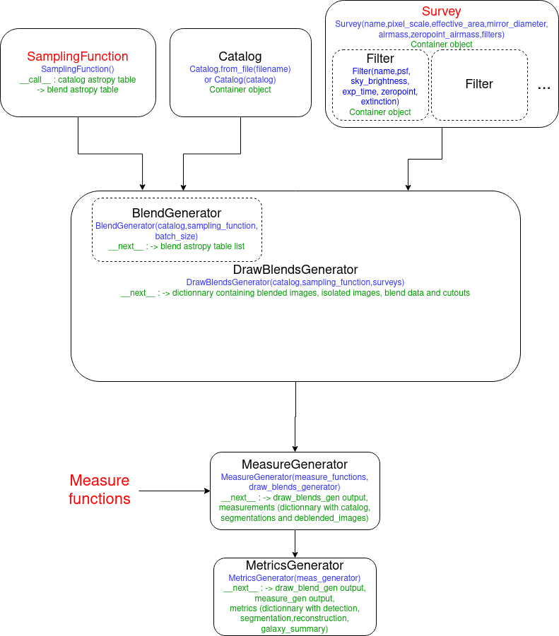

User Guide¶
This document gives a detailed look into the work-flow of BlendingToolKit (btk). For a quick tutorial on how to run btk, see the jupyter notebook tutorials here. This page is especially useful if you plan to use btk with your own detection/deblending/measurement algorithm. The workflow presented here should be as general as possible ; examples for the WeakLensingDeblending case are also given.
The workflow of btk is shown here:
Set parameter values : define parameter values to create postage stamps, including size of stamp, number of objects per blend, and how many stamps are to be drawn in one batch – i.e., the number of stamps btk will produce together in a singe batch. The observing survey name (e.g., LSST, DES), the name of the input catalog to draw objects from, and the names of the observing bands are also specified here.
Load Catalog : Reads the input catalog file. This must be done using a
Catalog-like object (e.g.WLDCatalog), either by providing directly the catalog or by using thefrom_file()method. Additionally, the catalog can be filtered using theapply_selection_function()method and providing an appropriate selection function.(optional) Define your own
SamplingFunction. A sampling function is a callable object, which takes into input a catalog and returns specific entries along with parameters for a given blend (such as object shifts in the stamp for instance). You may use the default classDefaultSamplingFunction, or define a new one if you want to have more control over how the galaxies are selected and the blends are defined.(optional) Define your own
Survey. A survey is a namedtuple containing different attributes relating to the observing conditions of a given survey, such as the pixel scale, and severalFilterinstances, which are also namedtuples containing attributes corresponding to the different filters of the survey (eg the exposition time or the sky brightness). PSF information is also contained in each of theFilterinstance. You may either use one of the default surveys already defined in btk.survey, or define your own survey to have more control of the parameters. Images for several surveys may also be produced by replacing the survey object by a list of survey objects.Draw blends : Simulates scene of overlapping objects, convolved by the PSF and with pixel noise. This step is done by creating a
DrawBlendsGenerator-like object (e.g.WLDGenerator), which is given the catalog, sampling function and survey created in step 2 to 4. It can then be called using next(<draw blends generator>) to get the results as a dictionary, including the blends with the key blend_images, the isolated galaxy images with the key isolated_images and the blend parameters with the key blend_list. In the case where multiple surveys were provided in step 4, each entry will instead take the form of a dictionary indexed by the survey names, with each value corresponding to the information for one of the surveys.Detection/Deblending/Measure : Performs user-defined measurements (detection, segmentation, deblended images) on the generated blends. The user may create a
MeasureGenerator, providing the draw blends generator from step 5 as well as one or several measure function(s), which perform the measurements on one blend. The user is expected to write his own measure function, an implementation for SEP (SourceExtractor with python) is available as an example.Compute metrics : matches the detections to the true galaxies and compute metrics relative to the quality of the detection, segmentation and deblended images. This is achieved using a
MetricsGeneratorobject, which takes as an argument the measure generator from step 6. For users that do not wish to use the whole BTK framework, the functioncompute_metrics()can be used directly to compute the metrics by directly providing the data.
BlendingToolKit can be run end-to-end using an input yaml config file, parsed by btk_input.py, which then runs btk with the defined parameters. However, this file is broken as of now and cannot be used yet.